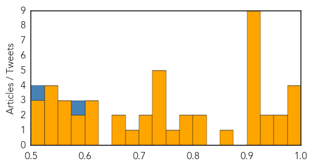
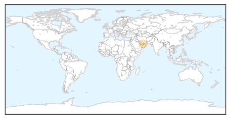

Unknown
30-Day Web Trend
0 alerts, 0 warnings

30-Day Twitter Trend
2 alerts, 0 warnings

Article Locations

Article Confidences
Top Articles:
- 0.994
- The benefits outweigh the risks
- 0.992
- Health Ministry: Thirty-two typhoid cases reported - Nation
- 0.992
- Mississippi Public Broadcasting
- 0.980
- Gators Control Flu Postponed, Alachua County Program Continues
- 0.968
- So what IS the truth about the Lyme disease 'epidemic'?
- 0.966
- Seneca Valley virus cases increase
- 0.949
- Alabama Lyme disease cases drop this year after spike in 2014
- 0.931
- Typhoid fever cases on the rise in Kuala Lumpur – BorneoPost Online
- 0.917
- Chicago Tribune
- 0.917
- Chicago Tribune
- 0.917
- Chicago Tribune
- 0.917
- Chicago Tribune
- 0.917
- Chicago Tribune
- 0.917
- Chicago Tribune
- 0.917
- Chicago Tribune
- 0.917
- Chicago Tribune
- 0.917
- Chicago Tribune
- 0.871
- Take steps to prevent flu from spreading within your household
- 0.811
- Lyme Disease Could Be a Game Changer in the 2016 Election
- 0.810
- Nursing Homes’ Residents Face Health Risks From Antibiotics’ Misuse
- 0.789
- Ook in Italië wordt Godfried 'kardinaal' Danneels nu openlijk beschuldigd van vrijmetselarij, hetgeen zijn automatische excommunicatie zou betekend hebben!
- 0.780
- Cause of new born deaths identified
- 0.773
- Jamaica: Cause of new born deaths identified
- 0.730
- Female suicide bombers strike fleeing villagers in northeast Nigeria
- 0.730
- Libya's recognised parliament rejects UN proposal for unity govt
- 0.730
- Israel summons French envoy over plan for al-Aqsa observers
- 0.730
- Trudeau heir leads the pack as Canada heads to the polls
- 0.727
- Oscar Pistorius leaves jail for house arrest
- 0.723
- The Role of Health Care in State-Building for Somalia
- 0.710
- Long wait for vaccine
- 0.697
- Inherited determinants of Crohn's disease and ulcerative colitis phenotypes: a genetic association study
- 0.666
- Minister of Health Meets with UHWI, MOH and SERHA Team
- 0.664
- Balkans: Thousands of refugees face severe hardship across the region
- 0.603
- Smugglers, jihadists prey on Mali’s rare desert elephants
- 0.603
- Acclaimed Italian writer De Luca cleared in Alps train sabotage case
- 0.603
- British journalist found dead at Istanbul Airport
- 0.580
- Help for Lyme Sufferers
- 0.577
- Ameenah Gurib-Fakim: «Maurice pas assez sensibilisée sur le réchauffement climatique
- 0.573
- New deadly genetic disease in Russia's Yakutia
- 0.569
- Discrimination against dementia-sufferers cause for concern
- 0.556
- Regional Emergency Medicine and Critical Care Travel Network: Caribe EMC2-Net
- 0.550
- Organic Pastures Dairy Recalls Contaminated Raw Whole Milk
- 0.534
- Popular treatment may not be the most reliable
- 0.530
- Cancers ignite fears in Ware County residents
- 0.527
- Q&A With Joshua Petrie From University of Michigan School of Public Health
- 0.521
- Military trainings kicks in at movie theater
- 0.511
- American Experience: The Forgotten Plague
- 0.504
- Popular treatment may not be the most reliable
Top Tweets:
- 0.582
- RT: Since that day nearly 9000 Haitians have died of the disease. It was traced back to that very UN base a fact the UN has …
- 0.513
- Flu Fact 1: You cannot get the flu from the flu vaccine http://t.co/ckzwgX1QIR What’s stopping YOU from getting your fluvax
Measles
30-Day Web Trend
1 alerts, 0 warnings
30-Day Twitter Trend
0 alerts, 0 warnings

Article Locations
Article Confidences

Top Articles:
Top Tweets:
-
No tweets found for Oct 19, 2015